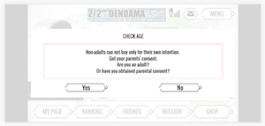
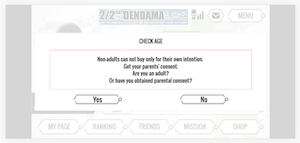

課金¶
年齢確認について¶
- 課金時の年齢確認は下記の通りとする
- 月額課金、個別課金双方課金時に必ず年齢確認画面を表示する
- 年齢（例えば16才など）によって課金できる額はコントロールしない。よって地域別の年齢のだし分けもしない。
- 年齢の裏付けは取らない（本当に20才以上かなど）
- 年齢確認のモーダルイメージは下記
.png) 

.png)
商品ID¶
- iOS の非消耗型の種類は使用しない。消耗/非消耗の管理は電玉側で行う。
- Android では実装上、アプリ内アイテムと定期購入を分けて行う場面があるため、商品IDで区別できるようにするため、定期購入のSKUのプレフィックスを subs. とする。
| 名称 | 種類 (iOS) | プロダクトID (iOS) | 種類 (Android) | SKU (Android) |
|---|---|---|---|---|
| ゲーム1回プレイチケット | 消耗型 | jp.co.dendama.app.ticket1 | アプリ内アイテム | ticket1 |
| ゲーム3回プレイチケット | 消耗型 | jp.co.dendama.app.ticket3 | アプリ内アイテム | ticket3 |
| ゲーム5回プレイチケット | 消耗型 | jp.co.dendama.app.ticket5 | アプリ内アイテム | ticket5 |
| HP回復剤 | 消耗型 | jp.co.dendama.app.life | アプリ内アイテム | life |
Nativeでの商品登録¶
- 商品のマスタ はbitbucketで管理。
iOS¶
- App Store Connect から「マイApp」を選択し、「電玉」を選ぶ
- 上タブにある「機能」を押すと課金アイテムの一覧が閲覧可能
- 月額課金は「Monthly Plan1」というグループで管理
- 試用期間は１ヶ月（お試し価格で設定）
Android¶
- Google Play Console を開き、「電玉」を選ぶ
- 「ストアでの表示」から「アプリ内サービス」を選択すると、課金アイテムの一覧が閲覧可能
- Androidはアイテムのエクスポート・インポートが可能（月額課金以外）。2018/12現在のCSVは添付のkakin_android.csv
-
月額課金設定
-
アカウントの一時停止
アカウントの一時停止を有効にする ユーザーの定期購入を 30 日間一時停止し、引き続きお支払いの処理を試みます。この間、正当な理由によりコンテンツへのすべてのアクセスはブロックされ、お支払いの処理が成功した場合のみアクセスは復元されます。 お支払いの承認後にユーザー アクセスを復元できるよう、アカウントの一時停止を有効にする前にこの機能を実装しておいてください。
-
定期購入の再開
ユーザーが Google Play で定期購入を再開することを許可します ユーザーが Play ストアで解約した有効期限内の定期購入を再開できるようにします。これにより、ユーザーは有効期限の期日まで待つことなく、もう一度、定期購入できるようになります。 この機能を実装してから、定期購入の再開を有効にしてください。これにより、ユーザーは Play ストアで解約した有効期限内の定期購入を再開できるようになります。
-
定期購入ごとの無料試用
定期購入ごとの無料試用を有効にします アプリ内で利用可能な各定期購入の無料試用にユーザーが登録できるようにします。これを設定しない場合、ユーザーはアプリ内で 1 個のみの無料試用に登録できます。
- 無料試用期間は３０日
- 猶予期間は７日
-
アカウントの一時停止
(iOSのみ)課金可能かのチェック¶
-
Web から Native に問い合わせ
-
api-dendama://canMakePayments
-
-
Native から Web に回答
-
javascript:make_payments(enable)
-
- iOS ではファミリー利用向けの課金制限機能がありますが、Android ではそのような機能はありません。
- 互換性のため Android でもこのAPIは用意してありますが、常に true を返します。
商品情報取得プロセス¶
-
ユーザーに提示する商品が有効かどうかの Web から Native に問い合わせ
-
api-dendama://requestProducts/ticket1/ticket3/ticket5
-
-
App Store または Google Play Store
でチェックした商品のうち有効なものを Native から Web に回答
-
javascript:products([product, ...])
(product) = { id: "ticket1", title: "ゲーム1回チケット", description: "...", price: "130円" }- iOS の場合、プロダクトIDからバンドルID部分を省いたもの（Android におけるSKUに相当）を id として渡します。
-
- Web上で商品購入のためのUIを表示
購入プロセス¶
購入成立¶
-
購入する商品のIDとを Web から Native に送信
-
api-dendama://requestPayment/ticket1
-
- App Store または Google Play Store 上で購入
-
(iOS)購入に時間がかかっている場合
-
javascript:ios_payment_purchasing(sku)
-
-
購入が成立したことを Native から Web に伝達
-
javascript:ios_update_payment(sku, transactionId, receiptData) -
javascript:android_update_payment(sku, purchaseToken, orderId, receiptData, signature)
-
-
Web 側で購入したアイテムをユーザーに付与するなどの処理を行った後、Web
から Native に購入プロセスの終了を依頼
-
api-dendama://finishPayment/transactionId -
api-dendama://finishPayment/purchaseToken
-
-
購入プロセス終了
-
javascript:ios_success_finish_payment(trasactionId) -
javascript:android_success_finish_payment(purchaseToken)
-
購入を Store 上でキャンセル¶
- ...
- App Store または Google Play Store 上で購入をキャンセル
-
購入がキャンセルされたことを Native から Web に伝達
-
javascript:ios_cancel_payment(sku) -
javascript:android_cancel_payment()- Android では sku はなし
-
購入が何らかの理由で Store 上で失敗¶
- ...
- App Store または Google Play Store 上で購入が失敗
-
購入が失敗したことを Native から Web に伝達
-
javascript:ios_fail_payment(sku) -
javascript:android_fail_payment()- Android では productId はなし
-
(iOS)購入の許可待ち¶
- ...
-
App Store 上で（ファミリー利用向けにより）購入許可待ち
-
javascript:ios_payment_deferred(sku)
-
- 購入許可
-
購入が成立したことを Native から Web
に伝達（以降、購入成立の場合と同様）
-
javascript:ios_update_payment(sku, transactionId, receiptData)
-
(iOS)ユーザーの支払い情報が未登録¶
- ...
- App Store 上でユーザーが支払い情報を登録
-
何故かキャンセルの場合と同様のレスポンスがアプリ側に渡る
-
javascript:ios_cancel_payment(sku)
-
- 支払い情報の登録完了
-
購入が成立したことを Native から Web
に伝達（以降、購入成立の場合と同様）
-
javascript:ios_update_payment(sku, transactionId, receiptData)
-
Android¶
- Anroid ではアプリ起動時、およびフォアグラウンドに入ったときに、常に購入状態をチェックしている
-
よって、非消耗型、および定期購入については、その度に Native から Web
に以下の呼び出しがある。
-
javascript:android_update_payment(sku, purchaseToken, orderId, receiptData, signature)
-
- これは、Google Play Store 上で購入処理中にアプリが終了する場合があるためだそうです。
- Web 側で購入処理済みの商品に対して、再び android_update_payment が呼ばれた場合は、無視してください。
購入のリストア¶
- App Store および Google Play Store はアプリごとにユーザーの購入情報を常に保持しているので、いつでも取り出せることができる。
-
iOS における消耗型、Android
におけるアプリ内アイテムのうち消費済みにしたものは、購入情報から削除されている。
- 自動更新登録/定期購入以外は、今のところ全て消耗型/消費済みなので、 月額課金以外は購入情報から削除されている 。
- Android はアプリ内のキャッシュを参照するので、 デバイスを変更した場合などで取得できるかどうかは今のところ不明
-
Web から Native に購入のリストアを依頼
-
api-dendama://restorePayments
-
-
Native から Web に購入情報を回答
-
javascript:success_restore_payments([sku, ...]) - 商品IDの配列が返される。
-
(iOS) 自動更新登録¶
- 月額課金などの自動更新登録が App Store で更新
-
アプリが検知し、Native から Web に伝達
-
javascript:ios_update_payment(sku, transactionId, receiptData)
-
(Android) 定期購入¶
- アプリ側ではなく、レシート検証を通じてサーバー側が Google Play Store と通信して更新の確認等を行う。
レシート検証¶
-
不正な購入を防ぐためにサーバー側でレシート検証を行う必要がある、としている。
- 不正な購入とは、アプリの改竄、脱獄、アプリサーバーへの不正なアクセスなどにより不正に購入を実現すること
iOS¶
- ios_update_payment の際に行う。
-
商品ID、トランザクションID、レシートデータを Native から Web
を経由して、アプリサーバー側に送信する。
-
javascript:ios_update_payment(sku, transactionId, receiptData) - receiptData はJSONで表現されたレシート情報をBase64エンコードした文字列
-
-
アプリサーバーにおいて、「
https://buy.itunes.apple.com/verifyReceipt」 に対して、次のJSONデータをPOSTする。- 消耗型/非情報型：{"receipt-data": receiptData}
-
自動更新登録：{"receipt-data": receiptData,
"password": sharedSecret}
- sharedSecret は App Store Connect で取得できる「共有シークレット」のこと
- レスポンスをJSONで受け、status が 0 であればレシートは有効
-
有効/無効に関わらず、Web を経由して Native
を呼び出してトランザクションを終了させる。
-
api-dendama://finishPayment/transactionId
-
Android¶
- android_update_payment の際に行う。
-
商品ID、purchaseToken、orderId、レシートデータ、署名を Native から Web
を経由して、アプリサーバー側に送信する。
-
javascript:android_update_payment(sku, purchaseToken, orderId, receiptData, signature) - receiptData はJSONで表現されたレシート情報をBase64エンコードした文字列
-
-
アプリサーバーにおいて、
- Google Play Console で取得できる「公開鍵」を使って、
- receiptData をBase64デコードしたものと
- その署名である signature を検証する。
-
署名が有効であれば、Web を経由して Native
を呼び出してトランザクションを終了させる。
-
api-dendama://finishPayment/purchaseToken
-